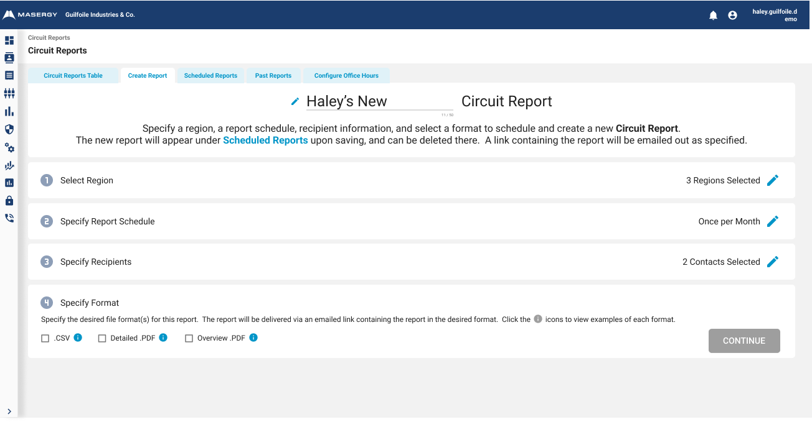
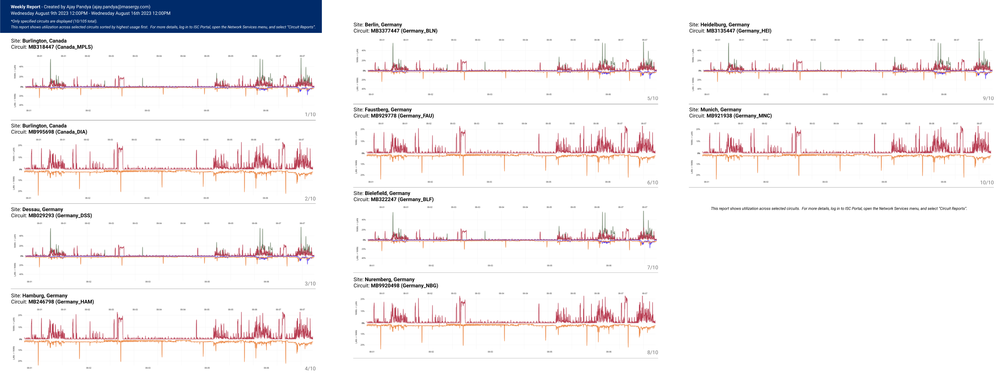
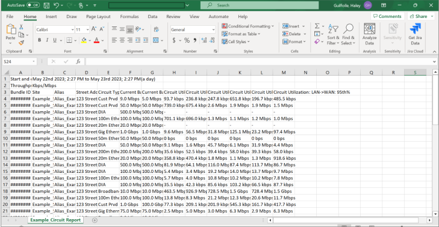

- •
- •
- •
Comcast Business/Masergy customers need the ability to monitor circuit health regularly- which often means monitoring thousands of circuits at once. Research conducted showed weekly/Monthly/Quarterly reports to be the preferred method of distribution for circuit health for these customers. However, the easy-to-download .csv reports were not customizable, and not formatted- so without manual intervention, they weren’t consumable or useful for Masergy customers.
As a result, legible, consumable versions of Circuit Reports could only be manually created circuit by circuit, so a team of 24 Masergy employees were each spending 16-20 hours a week (for a combined total of over 400 hours a week) creating these weekly reports by hand for customers who had requested them. Unfortunately, as a direct result, these employees were consistently behind on other tasks.
In addition, 14 other report types existed throughout the ISC Portal - and the long-term plan was to address ALL of these report types, so a reusable pattern proved necessary.
Leading design efforts, I assessed the needs for Circuit Reports as well as the other report types throughout the ISC Portal. I needed to design a pattern that could be reused in the future for all report types. After designing a wizard-style report scheduler, I also needed to design a few new report export types.
I began designing an easy-to-use, transparent solution that put report creation in the customer’s hands. In collaboration with Development and Product teams, I iterated on Circuit Reports designs to work with technical limitations. Customer testing helped us refine designs and content until the new tool was ready for rollout.
While the initial ask was to address Circuit Reports specifically, the designs needed to be reusable for other report types. After assessing the needs across the board, I set off to design an interaction pattern that could be tailored to fit the needs for other types of reports. I broke down the setup of reports into “building block” steps, such as “Specify Report Schedule” and “Specify Recipients”. These steps could be utilized for many report types in the future.
Users would need to specify the region containing the circuits to be included in the report, how often the report should be sent out, when the report should begin going out, who should be recipients of the report, and which file format the report should arrive in.
We managed to combine frequency and start date into one step, for four total steps in the creation process. One step is expanded at a time, while the other steps are collapsed. In order to move on to the next step, users are required to complete the step they’re on- so to provide transparency, I designed popovers on disabled buttons that explain to users what they need to complete before they can move on. Upon each step’s completion, a nice neat “summary” was generated showing what the user selected, and an edit button became available in case they wanted to go back and make changes to selections made previously.

I designed two different .PDF options for the Circuit Reports. One simply showed the data in table format, and one showed individual graphs for each circuit.


After rollout, once customers had a few weeks to adopt the new features and Masergy employees had time to adjust customer expectations and encourage them to create their own scheduled reports, we were thrilled to see that the 400+ hours a week that employees spent manually creating Circuit Reports was knocked down to under 20 hours a week, a 95% reduction in time spent on manual Circuit Report generation. Customers were delighted with easier-to-read report PDFs, and enthusiastically asked for more report types to follow suit. The leadership team was motivated to prioritize tackling the next three report types after seeing these exciting results.